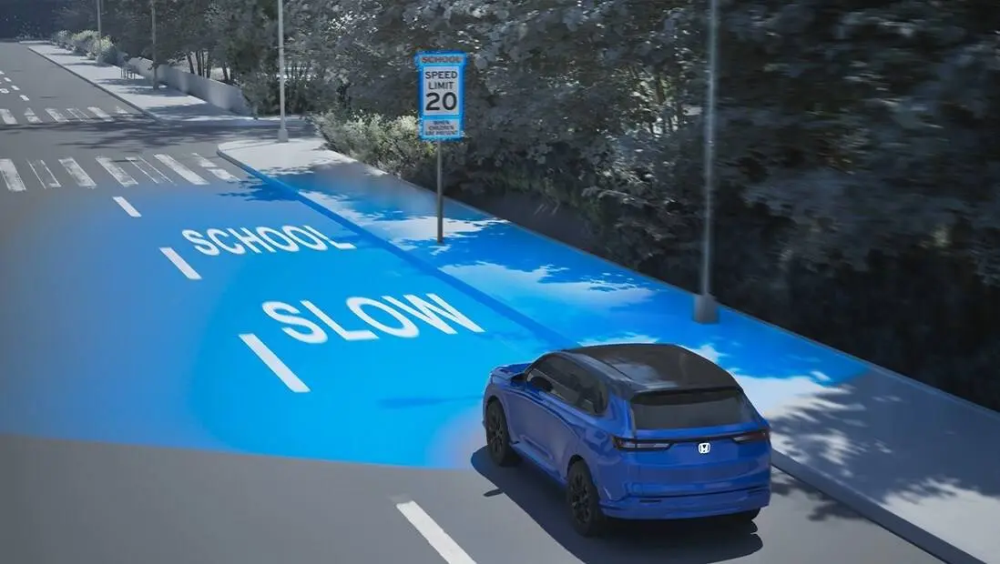
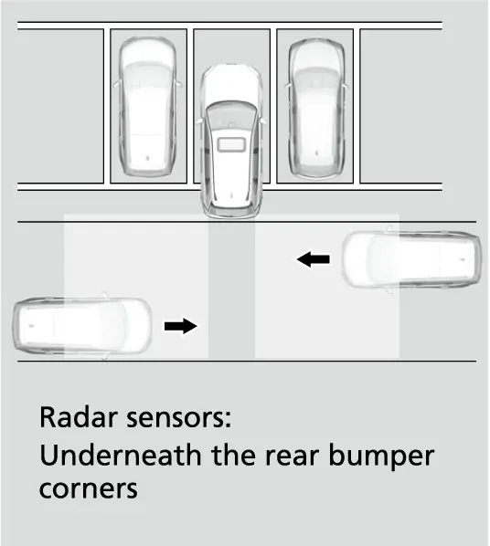
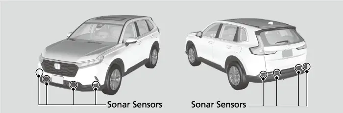

קאפיטל 15
פארקירן און פאמעליכע מאנעווערס
זייטן 247–257 אינעם PDF
שטעלט איין די שפיגלען פריער
גוט פארקן הייבט זיך אן נאך איידער דער קאר רירט זיך. דער אונער'ס מאנואל זאגט אז מען זאל האלטן די אינעווייניגע און אויסערליכע שפיגלען ריין און גוט איינגעשטעלט פאר די בעסטע זעאונג. מען זאל זיי איינשטעלן איידער מען הייבט אן דרייוון, ווען איר זיצט שוין אין אייער ריכטיגער דרייוו-פאזיציע. ווי אזוי צו איינשטעלן דעם זיץ און די דרייוו-פאזיציע, זעט קאפיטל 13.
דער מאנואל ווייזט צוויי סארטן אינעווייניגע שפיגלען, ביידע באצייכנט "not available on all models" (נישט ביי אלע מאדעלן). איינער האט א טאג און נאכט טאב: לייגט איבער דעם טאב אויף דער נאכט פאזיציע, און דאס פארמינערט ביינאכט דאס בלענדן פון די לייכטן פון די קארס הינטער אייך. דער צווייטער איז אן אויטאמאטישער פארטונקלענדער שפיגל מיט אן AUTO קנעפל (אויטאמאטיש). דריקט AUTO צו אנצינדן אדער אויסלעשן דאס פארטונקלען, און דער AUTO אינדיקאטאר צינדט זיך אן ווען די פונקציע ארבעט. די EX ספעציפיקאציע טאבעלע זאגט נישט וועלכן שפיגל אייער קאר האט, דערפאר קוקט אויפן אונטערשטן ראנד פונעם שפיגל. אויב איר האט דעם אויטאמאטישן שפיגל, ווערט דאס פארטונקלען אפגעשטעלט יעדעס מאל ווען די טראנסמישן איז אין R.
עלעקטרישע שפיגלען אויף די טירן
די זייט-שפיגלען שטעלט מען איין עלעקטריש, און זיי לאזן זיך נאר איינשטעלן ווען דער power mode איז אין ON. ווען ביידע שפיגלען זענען שוין איינגעשטעלט, קערט צוריק דעם סעלעקטאר צו דער מיטלסטער פאזיציע, כדי א צופעליגער אנריר זאל נישט באוועגן א שפיגל וואס איר האט שוין איינגעשטעלט.
איינשטעלן די טיר-שפיגלען
- שטעלט דעם power mode אויף ON.
- רוקט דעם L/R סעלעקטאר סוויטש (לינקס/ רעכטס) צו אויסקלייבן דעם לינקן אדער רעכטן שפיגל.
- דריקט דעם איינשטעל-סוויטש לינקס, רעכטס, ארויף אדער אראפ צו באוועגן דאס שפיגל-גלאז.
- טוט דאס זעלבע מיטן אנדערן שפיגל.
- קערט צוריק דעם סעלעקטאר סוויטש צו דער מיטלסטער פאזיציע.
פאר'ן פארקן, שטעלן אסאך דרייווערס יעדן שפיגל אזוי אז די זייט פון זייער אייגענעם קאר ווייזט זיך פונקט ביים אינעווייניגן ראנד. דאס גיט א פעסטן אנהאלט-פונקט צו אפשאצן דעם אפשטאנד צו די קוירבס און צו די קארס לעבן אייך.
צולייגן די שפיגלען
Honda'ס פיטשער גייד זאגט אז די עלעקטרישע זייט-שפיגלען פונעם CR-V קען מען אויך צולייגן מיט דער האנט. צולייגן העלפט אויף א שמאלער גאס אדער אין אן ענגן גאראזש, וואו אן אפענער שפיגל קען באקומען א קלאפ. אויפן EX זענען די שפיגלען אין דער פארב פונעם קאר, געהייצט, און זיי האבן אריינגעבויטע בלינקערס. Honda זאגט אז זיי זענען אויך געפורעמט אעראדינאמיש, וואס פארמינערט דעם ווינט-ליארעם. עפנט זיי שטענדיג צוריק אויף איידער איר פארט, ווייל א צוגעלייגטער שפיגל ווייזט גארנישט. אין אן ענגן ארט זענען די שפיגלען אייער איינציגע זעאונג פון פארנט און פון די זייטן פונעם קאר. די קאמערע דעקט נאר וואס איז הינטער אייך.
די Multi-Angle Rearview Camera (הינטערשטע קאמערע מיט עטליכע ווינקלען)
Honda'ס פיטשער גייד זאגט אז יעדער CR-V האט די multi-angle rearview camera מיט dynamic guidelines (באוועגליכע ליניעס), און די EX ספעציפיקאציע ליסטע באשטעטיגט עס. איר דארפט זי קיינמאל נישט אנצינדן. דער 9-אינטש סקרין גייט אויטאמאטיש איבער צום הינטערשטן בילד גלייך ווען איר שיפט אין R, און דאס קאמערע-בילד פארנעמט דאס ארט פון וועלכן audio סקרין עס איז געווען אויף. אויב דאס הינטערשטע בילד ווייזט זיך נישט ווען איר זענט אין R, קען זיין א פראבלעם מיטן סיסטעם. לאזט גלייך טשעקן דעם קאר ביים דילער.
וואס די קאמערע קען נישט ווייזן
דער מאנואל זאגט אז דאס הינטערשטע קאמערע-בילד איז באגרעניצט. מען קען נישט זען די עקן פונעם באמפער אדער עפעס וואס איז אונטער'ן באמפער. די ספעציעלע לינז פון דער קאמערע מאכט אויך אויסזען זאכן נענטער אדער ווייטער ווי זיי זענען באמת. וועטער, ליכט און הויכע טעמפעראטורן קענען נאך מער באגרעניצן דאס בילד. Honda לייגט צו אז די קאמערע פארטרעט נישט דאס איבערקוקן איבער דער פלייצע און ניצן די שפיגלען.

דריי קאמערע בילדער
די קאמערע האט דריי מאדָעס: Normal view (נארמאל), Wide view (ברייט) און Top down view (פון אויבן אראפ). טאפט דעם פאסיגן אייקאן אויפן סקרין צו וועקסלען צווישן זיי. איר קענט טוישן דאס בילד יעדע צייט ווען איר זענט אין R. Honda'ס פיטשער גייד באשרייבט wide view און top-down view אלס צוגאבן צום געווענליכן בילד.
הינטערשטע קאמערע בילדער
| בילד | וואס עס ווייזט | בעסטע באנוץ |
|---|---|---|
| Normal | א פשוט'ער, גלייכער בילד אהין צוריק | געווענליכע צוריקפארן |
| בילד | וואס עס ווייזט | בעסטע באנוץ |
|---|---|---|
| Wide | דאס ברייטסטע בילד הינטער'ן קאר | ארויספארן צוריק צווישן געפארקטע קארס |
| Top down | קוקט אראפ הינטער'ן באמפער | די לעצטע פאר פיס |
וועלכער בילד קומט ארויף דאס קומענדיגע מאל
די קאמערע געדענקט אייער לעצטע אויסוואל, מיט איין אויסנאם פאר Top down view. דער זכרון איז נוצליך ווען איר פארט עטליכע מאל פאראויס און צוריק אריינצופאסן אין א פלאץ.
כללים פון בילד-זכרון
| לעצטער בילד געניצט | מצב | קומענדיגער בילד אין R |
|---|---|---|
| Wide אדער Normal | יעדער מצב | דער זעלבער בילד |
| Top down | מאטאר אויסגעלאשן | Wide |
| Top down | ארויס פון R מער ווי 10 סעקונדעס | Wide |
| Top down | צוריק אין R אין 10 סעקונדעס | Top down |
פעסטע און באוועגליכע ליניעס
דאס קאמערע-בילד קען ווייזן צוויי סארטן ליניעס. פעסטע ליניעס (fxi ed guidelines) ווייזן זיך ווען איר שיפט אין R. באוועגליכע ליניעס (dynamic guidelines) באוועגן זיך מיט'ן סטירינג. Honda'ס פיטשער גייד זאגט אז זיי בייגן זיך ווען איר דרייט דעם ראד, צו ווייזן דעם בויגן וואס דער קאר וועט גיין ווען איר פארט צוריק. איר קענט אנצינדן אדער אויסלעשן יעדן סארט אונטער Fixed Guideline און Dynamic Guideline אין די customized features אויפן טאטש-סקרין (זעט קאפיטל 7). מען רעקאמענדירט צו לאזן ביידע אן. דער אונער'ס מאנואל דערקלערט נישט קיין פארבן אדער אפשטאנד-צייכנס אויף די ליניעס. ניצט די ליניעס אלס א וועגווייזער פאר דעם וועג פונעם קאר, און שאצט אפ דעם אפשטאנד מיט די אייגענע אויגן.
האלטן די לינז ריין
א שמוציגע לינז גיט א פארשווומענעם, אומנוצליכן בילד, און ווינטער-זאלץ און בלאטע זאמלען זיך שנעל דערויף. פאר מאדעלן אן א rearview camera washer (קאמערע-וואשער), זאגט דער מאנואל צו ניצן א ווייכע, פייכטע שמאטע צו האלטן די לינז ריין און פריי פון שמוץ. דער מאנואל דערמאנט א קאמערע-וואשער ביי געוויסע מאדעלן, אבער עס איז נישט באשטעטיגט פאר'ן EX, דערפאר רעכנט אויף א שמאטע. ווישט לייכט, אן שטארק רייבן, יעדעס מאל ווען דאס בילד זעט אויס נעפלדיג, געשטרייפט אדער טונקל.
Cross Traffic Monitor (ווארענונג פון קארס פון די זייטן)
אייער EX האט Cross Traffic Monitor, וואס Honda רעכנט אויס אלס סטאנדארט אויפן EX און העכערע טרימס. עס ניצט ראדאר סענסארן צו היטן די הינטערשטע עקן-געגנטן בשעת איר פארט צוריק, און עס ווארנט אייך אויב עס כאפט א קאר וואס קומט אן פון איינעם פון די הינטערשטע עקן. דער מאנואל זאגט אז עס איז מערסטנס נוצליך ווען איר פארט צוריק ארויס פון א פארקינג פלאץ, למשל פון צווישן צוויי הויכע וענס וואס פארשטעלן אייך די זעאונג אויף דער טראפיק-ליין.

ווען עס ארבעט
דער סיסטעם ווערט אקטיוו נאר ווען אלע פיר באדינגונגען זענען דא:
- דער power mode איז אין ON.
- Cross Traffic Monitor איז אנגעצונדן.
- די טראנסמישן איז אין R.
- אייער קאר פארט 3 mph (5 km/h) אדער פאמעלעכער.
פארט צוריק זייער פאמעלעך. ביי בערך 3 mph אדער שנעלער קען דער סיסטעם פארפעלן א קאר אדער ווארענען צו שפעט. Honda'ס פיטשער גייד לייגט צו אז עס כאפט קארס וואס קומען אן פון א הינטערשטן עק מיט א גיכקייט פון 6 ביז 16 mph (10 ביז 25 km/h).

די ווארענונג
ווען דער סיסטעם כאפט א קאר, הערט מען א באזער און אן אייל-אייקאן ווייזט זיך אויפן קאמערע סקרין אויף דער זייט פון וואנעט דער קאר קומט. ווען איר הערט דעם באזער, שטעלט זיך אפ, קוקט אהין, און לאזט דעם קאר דורכפארן.
דער סיסטעם האט לעכער אין זיין דעקונג. עס כאפט נישט א קאר וואס קומט אן גלייך פון הינטן, און עס הערט אויף צו ווארענען ווען א געכאפטער קאר קומט גלייך הינטער אייער קאר. עס ווארנט נישט פון קארס וואס פארן אוועק פון אייך, און עס קען ווארענען פון פוסגייער, בייסיקלען אדער זאכן וואס שטייען.
ווען עס קען נישט ארבעטן
דער סיסטעם קען פארפעלן א קאר, ווארענען צו שפעט, אדער ווארענען ווען עס איז גארנישט דא, אין די מצבים:
- א וואנט אדער אן אנדער קאר נאענט צום הינטערשטן באמפער פארשטעלט דעם ראדאר.
- איר פארט צוריק מיט בערך 3 mph אדער שנעלער.
- דער אנקומענדיגער קאר פארט פאמעלעכער ווי בערך 6 mph אדער שנעלער ווי בערך 16 mph.
- א דרויסנדיגער ראדאר פון אן אנדער קאר, אדער א שטארקער ראדיא סיגנאל פון א נאענטן געביידע, שטערט.
- איינער פון די הינטערשטע באמפער-עקן איז באדעקט מיט שניי, אייז, בלאטע אדער שמוץ.
- דאס וועטער איז שלעכט.
- אייער קאר שטייט אויף א שיפוע, אדער איז אנגעבויגן פון א שווערער לאסט הינטן.
- איר פארט צוריק צו א וואנט, סלופ אדער קאר.
- דער הינטערשטער באמפער אדער די סענסארן זענען נישט ריכטיג פאררעכט געווארן, אדער דער באמפער איז פארקרימט (לאזט עס טשעקן ביים דילער).
האלט די הינטערשטע באמפער-עקן ריין, און לייגט קיינמאל נישט אויף זיי קיין שום לעיבלס אדער סטיקערס.
סיסטעם סטאטוס אייקאן
א קליינער Cross Traffic Monitor אייקאן שטייט אונטן רעכטס אויפן קאמערע סקרין. אויב ער ווערט געל (amber) ווען איר זענט אין R, קען זיך האבן אנגעזאמלט בלאטע, שניי אדער אייז נאענט צו א סענסאר, און דער סיסטעם איז צייטווייליג אפגעשטעלט. טשעקט די באמפער-עקן און רייניגט זיי גוט. אויב אנשטאט דעם ווייזט זיך דער פעלער-אייקאן פונעם מאנואל, קען זיין א פראבלעם מיטן סיסטעם. ניצט עס נישט, און לאזט טשעקן דעם קאר ביים דילער. אויב דער סקרין טוישט זיך בכלל נישט ווען איר שיפט אין R, קען זיין א פראבלעם סיי מיט דער קאמערע און סיי מיט Cross Traffic Monitor, און א דילער דארף זיי טשעקן.
צו אנצינדן אדער אויסלעשן דעם סיסטעם, טאפט דעם Cross Traffci Monitor אייקאן אויפן אונטערשטן ראנד פונעם קאמערע סקרין, אדער ניצט די customized features אויפן טאטש-סקרין.
פארקינג סענסארן און Low Speed Braking: נישט אויפן EX
דער אונער'ס מאנואל האט קאפיטלען וועגן א Parking Sensor System (פארקינג סענסארן) און וועגן Low Speed Braking Control (אויטאמאטישע ברעמז ביי נידעריגער גיכקייט). ביידע זענען באצייכנט "not available on all models", און Honda'ס אפיציעלע EX ספעציפיקאציע טאבעלע רעכנט נישט אויס קיין איינעם פון זיי, דערפאר באטראכט זיי אלס נישט סטאנדארט אויף אייער EX. ביידע סיסטעמען ארבעטן מיט sonar סענסארן אין די באמפערס. אונזערע מקורות באשרייבן נישט קיין דילער-אקסעסארי ווערסיע, דערפאר קענען מיר נישט באשטעטיגן אז אזא זאך עקזיסטירט. אויב איר ווילט פארקינג סענסארן, פרעגט דירעקט ביי אייער דילער. אייער EX פארקט מיט דער קאמערע, Cross Traffic Monitor און די שפיגלען.
הילף ביי נידעריגער גיכקייט אויפן EX
| פיטשער | אויף אייער EX? |
|---|---|
| הינטערשטע קאמערע מיט dynamic guidelines | יא |
| Cross Traffic Monitor | יא |
| Blind Spot Information | יא (זעט קאפיטל 9) |
| Parking Sensor System | נישט אין דער EX ספעץ ליסטע |
| Low Speed Braking Control | נישט אין דער EX ספעץ ליסטע |
כדי איר זאלט דערקענען די סיסטעמען אויב איר פארט אן אנדער CR-V: אויף מאדעלן וואס האבן זיי, כאפן די sonar סענסארן הינדערנישן אונטער 5 mph (8 km/h). די ביפס ווערן שנעלער וויפיל נענטער מען קומט, און די עק-סענסארן געבן א שטענדיגן טאן ביי בערך 14 אינטשעס (35 cm) אדער ווייניגער. אויף יענע מאדעלן קען Low Speed Braking Control אויך ברעמזן צווישן בערך 1 און 6 mph (2 און 10 km/h) ווען עס כאפט א וואנט אדער אן אנדער הינדערניש. אייער EX האט נישט די פיטשערס, דערפאר ווארט קיינמאל נישט אויף א ביפ וואס וועט נישט קומען.

גרייס און סטירינג
קענט די מאסן פון אייער קאר. Honda גיט אן דעם EX מיט 184.8 אינטשעס לענג און 73.5 אינטשעס ברייט, מיט א 106.3-אינטש wheelbase (דער אפשטאנד צווישן די פארנטע און הינטערשטע אקסלען). דער סטירינג איז שנעל: 2.4 דרייען פון עק צו עק, אדער בערך 1.2 דרייען פון גלייך ביזן פולן עק אויף יעדער זייט. איר דארפט ווייניג איבערכאפן מיט די הענט אריינצוקומען אין א פלאץ.
EX מאסן פאר'ן מאנעווערירן
| זאך | ווערט |
|---|---|
| לענג | 184.8 in. |
| ברייט | 73.5 in. |
| Wheelbase | 106.3 in. |
| דריי-דורכמעסער, קוירב צו קוירב | 37.3 ft. |
| סטירינג דרייען, עק צו עק | 2.4 |
צוריק אריינפארן אין א פלאץ
דער מאנואל גיט נישט קיין שריט-ביי-שריט מעטאד ווי צוריק אריינצופארן אין א פלאץ, דערפאר פאראייניגט דער סדר די מכשירים וואס ער באשרייבט יא.
צוריק אריינפארן אין א פארקינג פלאץ
- שיפט אין R און ווארט ביז דאס קאמערע-בילד ווייזט זיך.
- איידער איר רירט זיך, דרייט דעם ראד און קוקט ווי די dynamic guidelines בייגן זיך, און דערנאך ציהלט דעם בויגן אריין אין פלאץ.
- פארט צוריק זייער פאמעלעך, 3 mph אדער ווייניגער, און קוקט אויף Cross Traffic אייל-צייכנס.
- טשעקט ביידע זייט-שפיגלען בשעת'ן פארן, ווייל די קאמערע זעט נישט די באמפער-עקן.
- ווען איר קומט נאענט, מאכט גלייך דעם ראד און גייט איבער צו Top down view פאר'ן לעצטן שטיקל.
- שטעלט זיך אפ גוט פאר דעם קוירב אדער וואנט, און געדענקט אז די לינז קען מאכן אפשטאנדן אויסזען פאלש.
פאראלעל פארקן
פאראלעל פארקן ניצט די זעלבע מכשירים. די קאמערע און dynamic guidelines ווייזן וואו דער הינטערשטער טייל פונעם קאר וועט גיין ווען איר דרייט. אבער בשעת דער הינטערשטער טייל דרייט זיך צום קוירב, דרייט זיך דער פארנט ארויס אויף דער אנדערער זייט, און די קאמערע ווייזט גארנישט פארנט אדער אויף דער זייט. דאס איז די ארבעט פונעם פאסאזשיר-זייט שפיגל. אויב איר דארפט זען דעם קוירב, ניצט דעם L/R סעלעקטאר אראפצובייגן יענעם שפיגל, און שטעלט אים צוריק נאכדעם. פארט פאמעלעך. אויב דער ווינקל זעט אויס פאלש, פארט פאראויס און פרובירט נאכאמאל אנשטאט עס צו צווינגען.
Brake Hold ארבעט נישט אין רעווערס
איין זאך פון Brake Hold (די ברעמז-האלט פונקציע) איבערראשט מענטשן ביים פארקן. אויטאמאטישער brake hold ווערט אקטיוו נאר ווען איר שטעלט זיך אפ מיט דער טראנסמישן אין א פאזיציע אחוץ P אדער R. עס ווערט אויך אפגעשטעלט ווען איר דריקט דעם ברעמז און שיפט אין P אדער R. דערפאר, אין רעווערס האלט גארנישט דעם קאר ווען איר הייבט אויף דעם פוס פונעם ברעמז. אויף א שיפוע'דיגן דרייוועי, האלט דעם פוס גרייט אויפן ברעמז פעדאל די גאנצע צייט ווען איר פארט צוריק. פאר מער פרטים וועגן Brake Hold, זעט קאפיטל 17.
פארענדיגן דאס פארקן
דער מאנואל ווארנט אז דער קאר קען אוועקקייקלען אויב איר פארלאזט אים אן באשטעטיגן אז Park איז אריין.
פארקן ריכטיג
- דריקט שטארק דעם ברעמז פעדאל.
- בשעת דער פעדאל איז נאך געדריקט, ציט ארויף דעם עלעקטרישן פארקינג ברעמז סוויטש פאמעלעך אבער אינגאנצן; דער אינדיקאטאר אינעם סוויטש און דער רויטער פארקינג ברעמז אינדיקאטאר צינדן זיך אן.
- לייגט אריין די טראנסמישן אין P, אבער נאר נאכדעם וואס דער קאר האט זיך אינגאנצן אפגעשטעלט.
- האלט דעם פוס אויפן ברעמז ביז P ווייזט זיך אויפן shift position אינדיקאטאר.
- לעשט אויס דעם מאטאר.


דער רויטער אינדיקאטאר לעשט זיך אויס בערך 30 סעקונדעס נאכדעם וואס איר לעשט אויס דעם מאטאר, און דאס איז נארמאל. איר קענט אנלייגן דעם עלעקטרישן פארקינג ברעמז אין יעדן power mode ווי לאנג די באטעריע האט כח, אבער איר קענט אים נישט אנלייגן אדער אפלאזן אויב די באטעריע איז טויט (זעט קאפיטל 20). איר קענט הערן דעם פארקינג ברעמז מאטאר נאענט צו די הינטערשטע רעדער, און דער ברעמז פעדאל קען זיך א ביסל באוועגן ווען ער ארבעט. ביידע זענען נארמאל. אויך, פארקט נישט נאענט צו טרוקן גראז, אויל אדער האלץ, ווייל די היץ פונעם עקזאסט קען אנהייבן א פייער.
שיפועים און שטארקע קעלט
לייגט שטענדיג אן דעם פארקינג ברעמז, ספעציעל ווען איר פארקט אויף א שיפוע. דער איינציגער אויסנאם איז זייער קאלטע וועטער, ווען דער פארקינג ברעמז קען פארפרירן אויב ער איז אנגעלייגט. ווען מען ערווארט אזא קעלט, לייגט אים נישט אן. אויב איר פארקט אויף א שיפוע אין אזעלכע באדינגונגען, דרייט אדער די פארנטע רעדער אזוי אז זיי וועלן אנקומען אינעם קוירב אויב דער קאר קייקלט זיך, אדער פארשטעלט די רעדער. אויב איר טוט נישט קיין איינס פון די צוויי, קען דער קאר זיך אומגעריכט אוועקקייקלען. פאר פרירנדיגע וועטער זאגט דער מאנואל אויך צו לייגן קלעצער (chocks) ביי די רעדער און זיכער מאכן אז די אויטאמאטישע פארקינג ברעמז פונקציע איז אויסגעלאשן (זעט קאפיטל 24).
ארויספארן פון א בארג
עס זענען דא צוויי וועגן אפצולאזן דעם פארקינג ברעמז, און די בעסטע ברירה הענגט אפ אין וועלכע ריכטונג דער קאר שטייט.
אפלאזן דעם פארקינג ברעמז
| מעטאד | ווי אזוי | באדינגונגען | בעסט פאר |
|---|---|---|---|
| מאנועל | דריקט ברעמז, דערנאך דריקט דעם סוויטש אראפ | Power mode ON | שטייענדיג אראפ אויף שטאפע בערג |
| אויטאמאטיש | דריקט לייכט דעם גאז | דרייווער'ס גארטל אן, מאטאר לויפט, נישט אין P אדער N | שטייענדיג ארויף, טראפיק |
ארויף קען די אויטאמאטישע אפלאזונג פאדערן מער גאז. דער פארקינג ברעמז קען זיך נישט אויטאמאטיש אפלאזן ווען די check engine ליכט אדער דער טראנסמישן סיסטעם אינדיקאטאר איז אן. עס קען זיך אויך נישט אויטאמאטיש אפלאזן ווען דער געלער (amber) ברעמז סיסטעם, VSA, ABS אדער SRS אינדיקאטאר איז אן. אויב ער לאזט זיך נישט אויטאמאטיש אפ, לאזט אים אפ מאנועל.


אויטאמאטישע פארקינג ברעמז פונקציע
ווען די פונקציע איז אן, לייגט זיך דער פארקינג ברעמז אויטאמאטיש אן ווען איר שטעלט דעם power mode אויף VEHICLE OFF. צו באשטעטיגן אז דער ברעמז איז אנגעלייגט, טשעקט אז דער רויטער אינדיקאטאר ברענט.
אנצינדן אדער אויסלעשן די אויטאמאטישע פארקינג ברעמז פונקציע
- מיט'ן power mode אין ON, לייגט אריין די טראנסמישן אין P.
- אן דריקן דעם ברעמז פעדאל, ציט ארויף און לאזט אפ דעם פארקינג ברעמז סוויטש.
- טשעקט אז דער רויטער פארקינג ברעמז אינדיקאטאר ברענט.
- ציט ארויף און האלט דעם סוויטש ביז ער ביפט.
- לאזט אים אפ, און אין דריי סעקונדעס ציט ארויף און האלט אים נאכאמאל.
- לאזט אפ דעם סוויטש ביים פארענדיגונג-קלאנג: צוויי ביפס מיינט אן, איין ביפ מיינט אויס.
פאר א קאנוועיער קאר וואש אדער שלעפן, קענט איר צייטווייליג אויסלעשן די פונקציע אן טוישן איר איינשטעלונג. ערשט לעשט אויס ACC און אויטאמאטישן brake hold. דערנאך דריקט דעם ברעמז, שטעלט אפ דעם קאר, שטעלט דעם power mode אויף VEHICLE OFF, און אין צוויי סעקונדעס דריקט אראפ דעם פארקינג ברעמז סוויטש. לאזט דעם פארקינג ברעמז אפגעלאזט פאר'ן וואש אדער שלעפן.
קיינמאל נישט פארקן אויף Brake Hold
פארלאזט קיינמאל נישט דעם קאר ווען אויטאמאטישער brake hold האלט אים. Brake Hold איז נאר פאר צייטווייליגע אפשטעלן, און אויף שטאפע בערג אדער גליטשיגע וועגן קען דער קאר זיך נאך אלס באוועגן. Brake Hold האלט דעם ברעמז אנגעלייגט ביז 10 מינוט. נאך דעם, אדער אויב דער מאטאר ווערט אויסגעלאשן אדער דער דרייווער'ס סיט בעלט ווערט אויפגעשפילעט, שטעלט זיך אפ דער סיסטעם און דער פארקינג ברעמז לייגט זיך אן.


אפטע פראגעס
פראגע: האט מיין EX פארקינג סענסארן וואס ביפן?
ענטפער: ניין. דער פארקינג סענסאר סיסטעם און Low Speed Braking Control זענען נישט אין דער EX ספעץ טאבעלע. ניצט די קאמערע, Cross Traffic Monitor, די שפיגלען און די אייגענע אויגן.
פראגע: פארוואס האט Cross Traffic Monitor מיך נישט געווארנט פון א קאר?
ענטפער: עס ארבעט נאר ביי 3 mph אדער פאמעלעכער אין R, כאפט קארס וואס קומען אן מיט בערך 6 ביז 16 mph, און קען נישט זען קארס גלייך הינטער אייך. שמוץ אויף די באמפער-עקן, א שיפוע, אדער א וואנט לעבן דעם באמפער קענען עס אויך פארשטעלן.
פראגע: פארוואס עפנט זיך די קאמערע אמאל אין Wide view ווען איך האב אויסגעקליבן Top down?
ענטפער: Top down view בלייבט נאר אויב איר שיפט צוריק אין R אין 10 סעקונדעס. נאך מער ווי 10 סעקונדעס ארויס פון R, אדער נאכדעם וואס דער מאטאר איז אויסגעלאשן, הייבט די קאמערע אן אין Wide view.
פראגע: דער CTM אייקאן אויפן קאמערע סקרין איז געווארן געל. וואס יעצט?
ענטפער: מסתמא האט זיך אנגעזאמלט בלאטע, שניי אדער אייז נאענט צו א סענסאר, און דער סיסטעם איז צייטווייליג אפגעשטעלט. רייניגט גוט די הינטערשטע באמפער-עקן.
פראגע: איז נארמאל אז די רויטע BRAKE ליכט בלייבט אן נאכן אויסלעשן?
ענטפער: יא . זי לעשט זיך אויס בערך 30 סעקונדעס נאכדעם וואס איר לעשט אויס דעם מאטאר.
פראגע: זאל איך ניצן דעם פארקינג ברעמז אין שטארקע קעלט?
ענטפער: אין זייער קאלטע טעמפעראטורן קען ער פארפרירן. לאזט אים אויס, דרייט די רעדער צום קוירב אדער פארשטעלט אדער לייגט קלעצער ביי די רעדער, און מאכט זיכער אז די אויטאמאטישע פארקינג ברעמז פונקציע איז אויסגעלאשן.
הויפט פונקטן
- שטעלט איין די שפיגלען אין ON, דערנאך קערט צוריק דעם L/R סעלעקטאר אין מיטן.
- די קאמערע זעט נישט די באמפער-עקן אדער אונטער'ן באמפער, און איר לינז פארקרימט דעם אפשטאנד.
- ניצט Top down view פאר די לעצטע פאר פיס; ער בלייבט אקטיוו אויב איר קערט צוריק צו R אין 10 סעקונדעס.
- Cross Traffic Monitor פאדערט פאמעלעך פארן, 3 mph אדער ווייניגער, און ריינע הינטערשטע באמפער-עקן.
- אייער EX האט נישט קיין פארקינג סענסארן אדער Low Speed Braking Control.
- Brake Hold ארבעט נישט אין R, דערפאר האלט דעם פוס אויפן ברעמז ווען איר פארט צוריק אויף א שיפוע.
- פארקט לויטן סדר: ברעמז געדריקט, פארקינג ברעמז אנגעלייגט, P באשטעטיגט, דערנאך מאטאר אויס.
- פארלאזט קיינמאל נישט דעם קאר ווען נאר Brake Hold האלט אים.